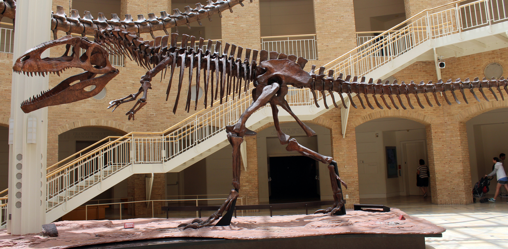
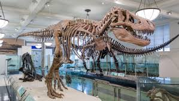
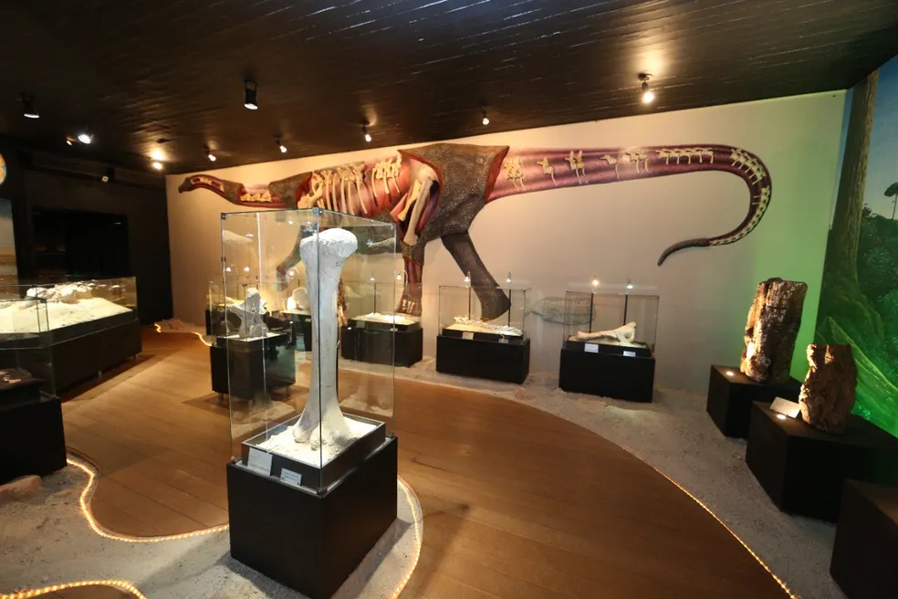
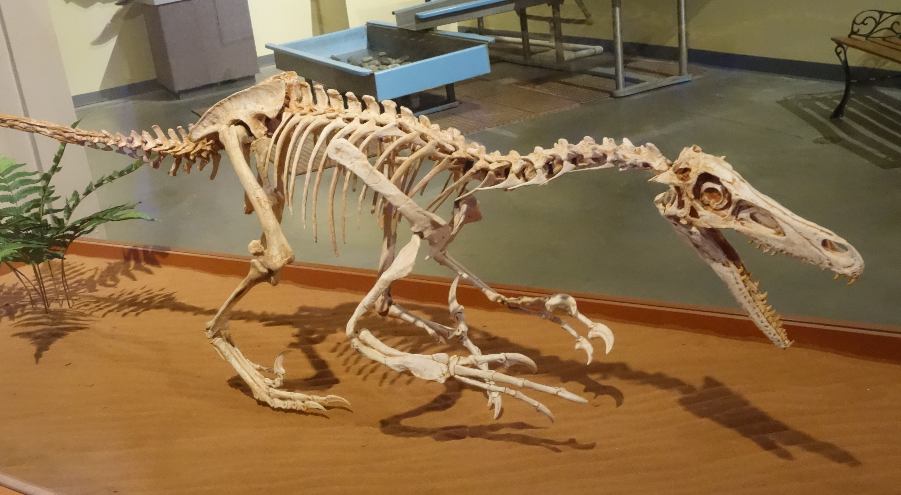
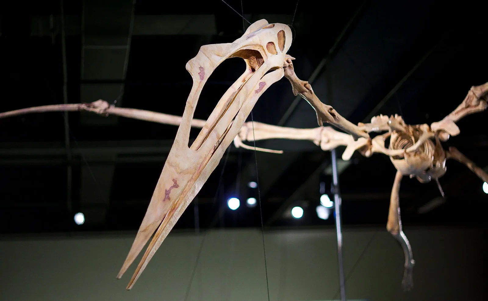
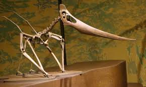
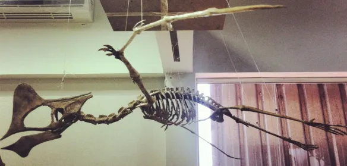
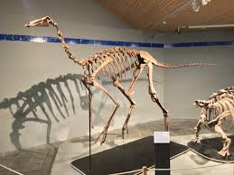

Fósseis
Os fósseis são restos ou vestígios de seres vivos que viveram há milhões de anos. Eles são fundamentais para entendermos como era a vida na Terra antes dos seres humanos existirem.
Graças aos fósseis, os cientistas conseguem estudar dinossauros, plantas antigas e até o clima de épocas passadas
Alguns dos Fósseis Abaixo

1. Giganotossauro
O gigante do sul! Este é o Giganotossauro, um dos maiores dinossauros terópodes (carnívoros) que já caminharam pela Terra, superando até mesmo o T-Rex em tamanho em alguns aspectos.

2. Parassaurolofo
Uma sinfonia pré-histórica. O Parassaurolofo é facilmente reconhecido por sua longa crista tubular voltada para trás, que os cientistas acreditam ter sido usada para emitir sons complexos de comunicação e para exibição.

3. Tiranossauro Rex
O inconfundível Rei dos Dinossauros. Com sua mandíbula incrivelmente poderosa e braços curtos, o T-Rex continua sendo o predador mais famoso e temido do final do período Cretáceo.

4. Paquicefalossauro
O dinossauro "cabeça-dura". Este herbívoro é famoso por seu crânio espesso e em formato de domo, cercado por protuberâncias ósseas, possivelmente usado em disputas territoriais ou rituais de acasalamento.

5. Exposição de Titanossauro
Os gigantes de Peirópolis! Uma bela exposição no Museu dos Dinossauros em Uberaba, destacando os Titanossauros, os gigantescos dinossauros pescoçudos que habitaram a região do Triângulo Mineiro há milhões de anos.

6. Velociraptor
Pequeno, ágil e letal. Ao contrário da versão gigante dos cinemas, o verdadeiro Velociraptor tinha o tamanho de um peru, era coberto de penas e caçava usando a terrível garra em formato de foice em seus pés.

7. Quetzalcoatlus
O soberano dos céus pré-históricos. Embora não seja um dinossauro, mas sim um pterossauro, o Quetzalcoatlus foi um dos maiores animais voadores de todos os tempos, com uma envergadura que podia chegar ao tamanho de um pequeno avião.

8. Pteranodonte
O clássico planador dos oceanos antigos. Com sua icônica crista óssea alongada apontando para trás e um longo bico sem dentes, o Pteranodonte é um dos répteis voadores mais conhecidos do mundo, usando suas imensas asas para sobrevoar as águas do período Cretáceo em busca de peixes.

8. Tapejara
Um ícone exótico dos céus brasileiros. O Tapejara é um pterossauro fascinante (cujos fósseis são muito famosos na Bacia do Araripe, no Nordeste do Brasil) que chama a atenção por sua impressionante e peculiar crista craniana alta e bico curto, características que indicam uma possível dieta baseada em frutos e sementes.

8. Gallimimus
O "avestruz" da Era Mesozoica. Com pernas longas, ossos ocos e um bico sem dentes, o Gallimimus era um corredor veloz adaptado para fugir rapidamente de predadores.

8. Baryonyx
O pescador pré-histórico. O Baryonyx é facilmente reconhecido por seu focinho longo e estreito, muito semelhante ao de um crocodilo moderno. Essa adaptação incrível, aliada às suas garras em formato de gancho, fazia dele um exímio caçador de peixes nas margens de rios e lagos.